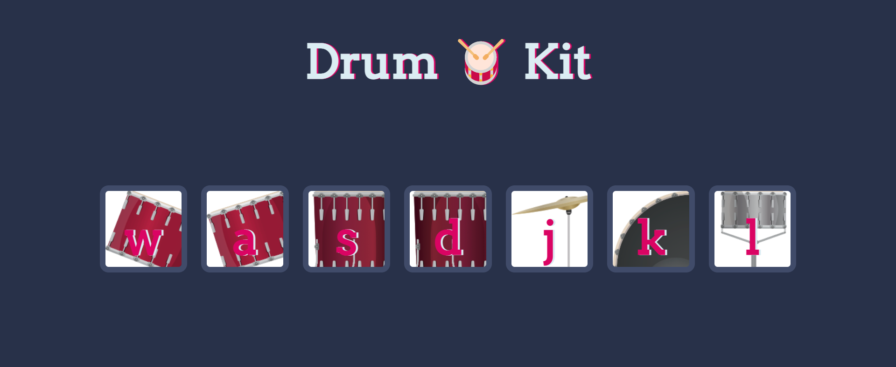
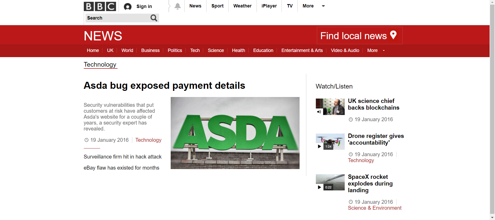

Learning to create amazing films that capture reality.
Time Tracker App
a mobile application using the Flutter framework that allows users to track and log the amount of time they spend on various tasks or activities. The app would use Firebase as the backend to store and retrieve user data, including task names, start and end times, and total duration.The app would likely have a user login system that utilizes Firebase Authentication to securely log in and create accounts. Once logged in, the user would be able to view their task list and add new tasks. They can start, stop, and edit the task duration. The user can also view the total time spent on each task and generate a report, and the report data will be stored in the Firebase Realtime Database. Additionally, the app may use Firebase Cloud Storage to allow users to attach files or images related to the task.
Overall, the app would be a simple yet powerful tool for tracking and managing time, utilizing the robust and scalable capabilities of Firebase to store and retrieve user data.
Drum Kit

A drum kit website made using JavaScript would allow users to interact with virtual drums using their computer keyboard or mouse. The website would use JavaScript to create the visual elements of the drums and to detect user input, such as keyboard presses or mouse clicks. The JavaScript would then trigger the appropriate sound to be played, simulating the experience of playing a real drum kit. The website could also include additional features such as different drum kits to choose from, the ability to record and save drum performances, and the ability to share drum performances with others. Overall, the website would provide a fun and interactive way for users to play and experiment with drums without the need for physical equipment.
Blog Website

I made a BBC blog website using HTML, CSS, and JavaScript. The website has a clean and professional design, with a layout and color scheme that is consistent with the BBC's branding.
The website has a navigation menu at the top of the page, which allows users to easily access different sections of the site, such as the latest news, sport, and weather. The homepage also features a featured post or news article, with a large image and headline to grab the user's attention. Additionally, the website has a search bar that allows users to easily find specific articles or topics.
The blog section displays a list of articles in a grid layout, each with a title, an image and a brief summary of the content. Users can click on an article to read the full post and leave comments. The articles are organized by categories and there is also a filter option.
The site also includes social media share button that allows users to share the articles on different platforms.
I used JavaScript to add some interactive elements such as a smooth scroll on the navigation menu, image carousel and a form validation. I also used JavaScript to dynamically load content from a JSON file, which allows for easy updating of the website's content.
Overall, the website provides a user-friendly and visually appealing way for users to stay informed about the latest news and updates from the BBC.